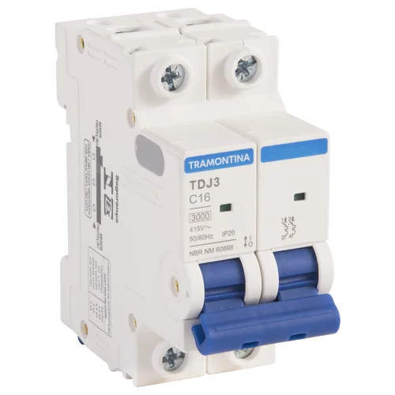
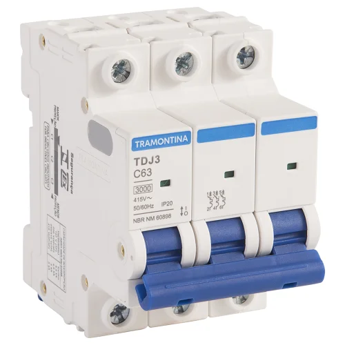
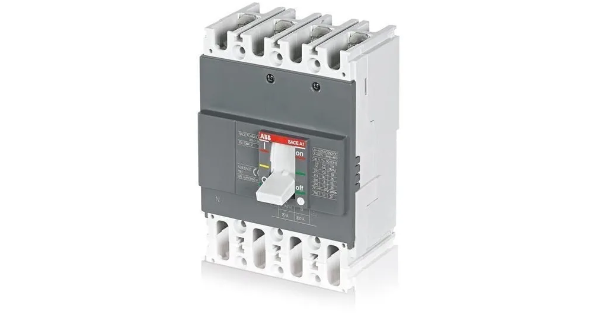
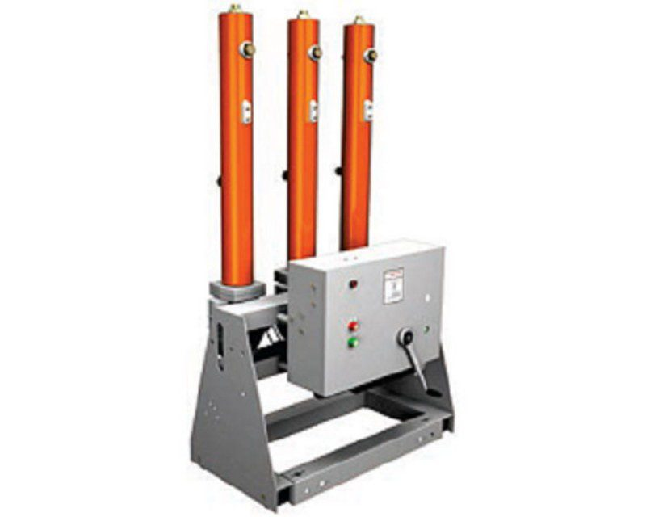
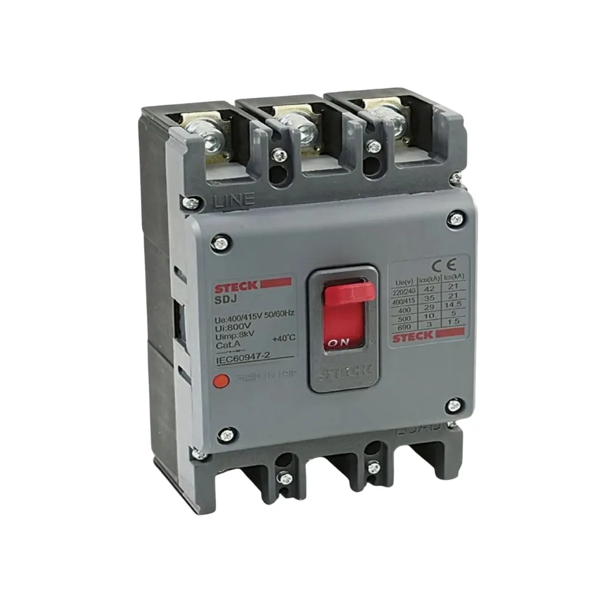

Monopolar
Conhecidos também como unipolares ou disjuntores monofásicos, eles são normalmente utilizados em circuitos de tomadas e iluminação com sistema fase-neutro. Nesses circuitos, eles ligam e desligam apenas a fase, já que o neutro aterrado não representa perigo. A grande maioria desse tipo de disjuntor é do tipo termomagnético, possuindo apenas um terminal de entrada e um de saída para o fio fase, protegendo o circuito de duas formas

Bipolares
Conhecidos também como disjuntores duplos ou bifásicos, eles são usados com frequência em chuveiros elétricos e outros circuitos alimentados por duas fases, as quais precisam ser interrompidas simultaneamente. A grande maioria dos disjuntores bipolares é do tipo termomagnético.

Tripolares
Conhecidos também como disjuntores trifásicos ou tripolares, eles são utilizados em circuitos alimentados por três fases, geralmente com tensões de 220V ou 380V. Esse dispositivo permite ligar ou desligar todas as fases simultaneamente através de uma única alavanca, sendo amplamente aplicado na proteção de equipamentos de alta potência, como motores elétricos trifásicos.

Térmicos
Esse disjuntor é a junção do magnético com térmico, eles ativam quando a temperatura do circuito aumenta, esse calor faz com que uma lâmina dentro do disjuntor se curve, assim desligando todo o circuito.

Disjuntor a óleo
Esses disjuntores dividem-se em duas classes: GVO e PVO. No GVO, que possui menor capacidade, as fases permanecem mergulhadas em um único recipiente com óleo, utilizado tanto para a isolação quanto para a extinção do arco elétrico. Já no PVO, há uma câmara de extinção de fluxo forçado sobre o arco com a função de melhorar a eficiência da interrupção da corrente, reduzindo assim o volume de óleo necessário no disjuntor. Esse tipo de equipamento vem sendo menos utilizado devido ao alto risco de incêndio e explosão, ao impacto ambiental e à necessidade de manutenção constante e cara.

Disjuntores a ar Comprimido
Esse disjuntor, quando abre cortando a energia, faz com que um arco elétrico passe por sua câmara de extinção. Nesse momento, o disjuntor solta um jato de ar muito forte direto no arco, esmagando-o e fazendo com que ele perca sua força. A eficácia desse disjuntor está na velocidade em que o ar age em relação à eletricidade.

Minidisjuntores
Eles são encontrados, na maioria das vezes, em residências ou em menores instalações de menor porte, sendo voltados para correntes elétricas com valores entre 2 a 125A. Além disso, estes disjuntores são classificados e divididos por suas curvas de atuação.
Disjuntores de Caixa Moldada
Estes disjuntores são muito mais robustos e seu nome vem de sua estrutura em caixa termoplástica. Devido à sua construção blindada, eles são encontrados em capacidades de até aproximadamente 1.600A. Equipados com câmaras de extinção de arco elétrico altamente eficientes, eles são capazes de interromper correntes de curto-circuito até 30 vezes maiores do que os disjuntores convencionais.
